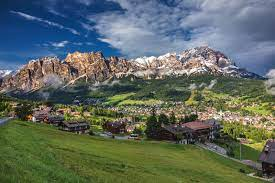
Cortina (Veneto)
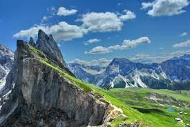
Seceda ( Alto Adige)

Passo Gardena ( Alto Adige)

Passo Pordoi (Veneto)
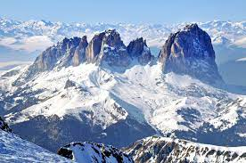
Marmolada ( Alto Adige)

Passo Sella ( Alto Adige)

Passo Fedaia ( Alto Adige)

Passo Giau (Veneto)

Cinque Torri (Veneto)
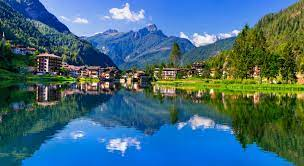
Lago di Alleghe (Veneto)

Tre Cime di Lavaredo ( Alto Adige)

Piramidi di terra ( Alto Adige)
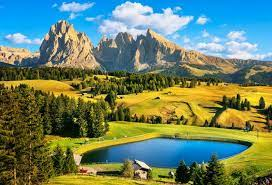
Alpi di Siusi ( Alto Adige)
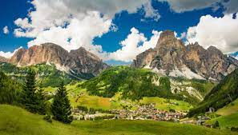
Corvara ( Alto Adige)

Piani di Pezzè (Veneto)
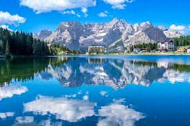
Lago di Misurina (Veneto)

Lago di Garda (Lombardia)
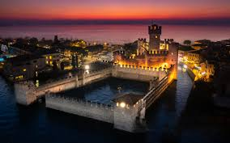
Sirmione sul Garda (Lombardia)

Lago di Barcis (Friuli Venezia Giulia)

Lago di Como (Lombardia)

Auronzo di Cadore(Veneto)
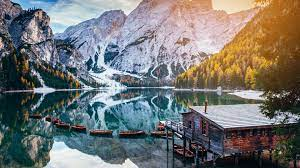
Lago di Braies (Alto Adige)
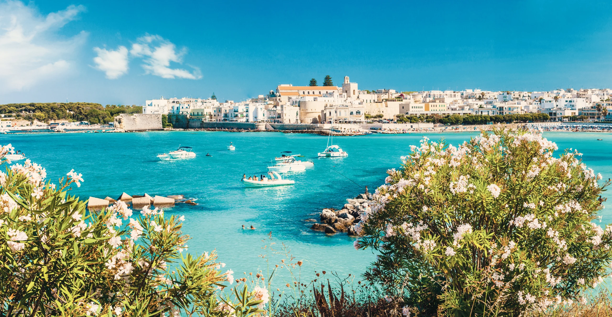
Lecce(Puglia)
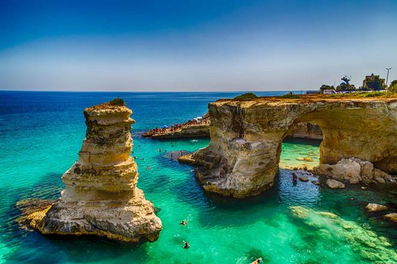
Salento(Puglia)
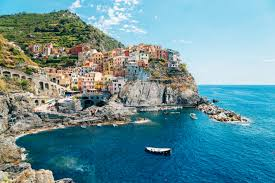
Cinque Terre (Liguria)
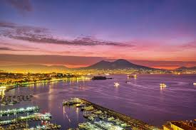
Napoli (Campagnia)
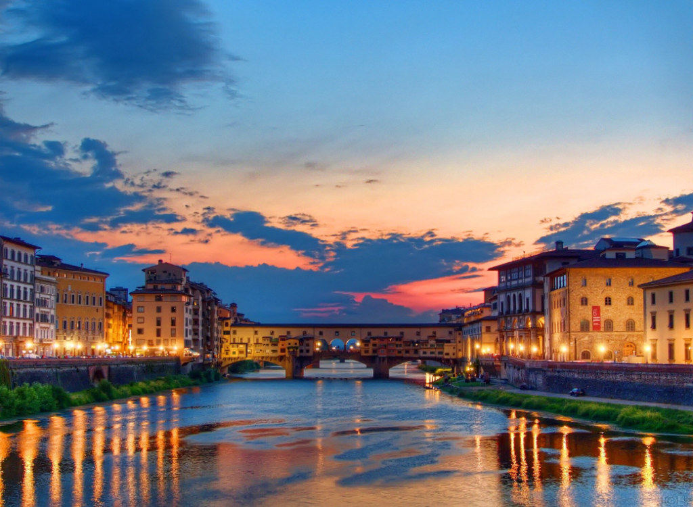
Firenze (Toscana)
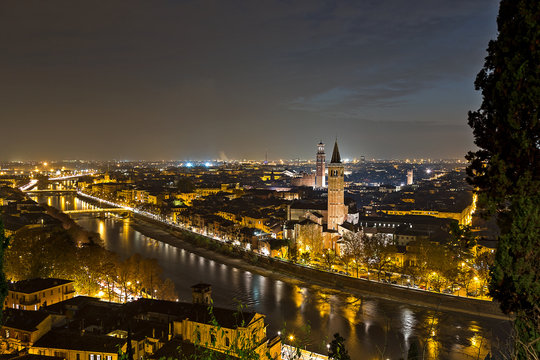
Verona (Veneto)
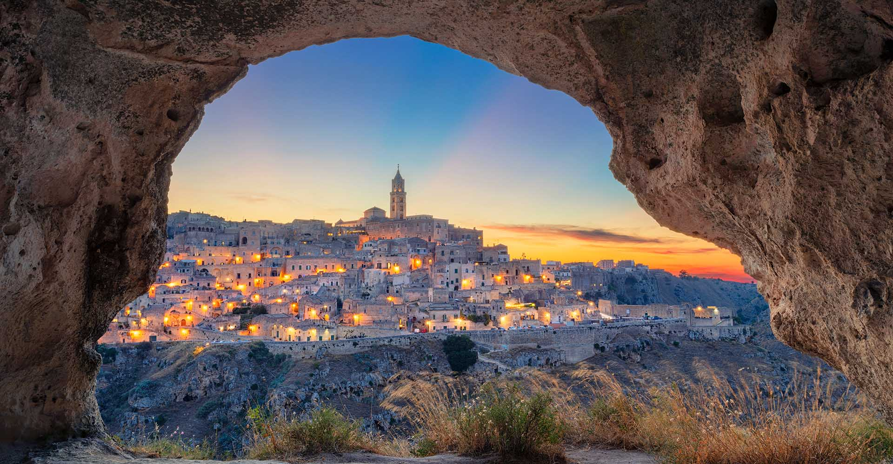
Matera (Puglia)
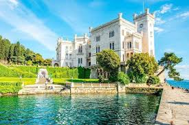
Trieste (Friuli Venezia Giulia)
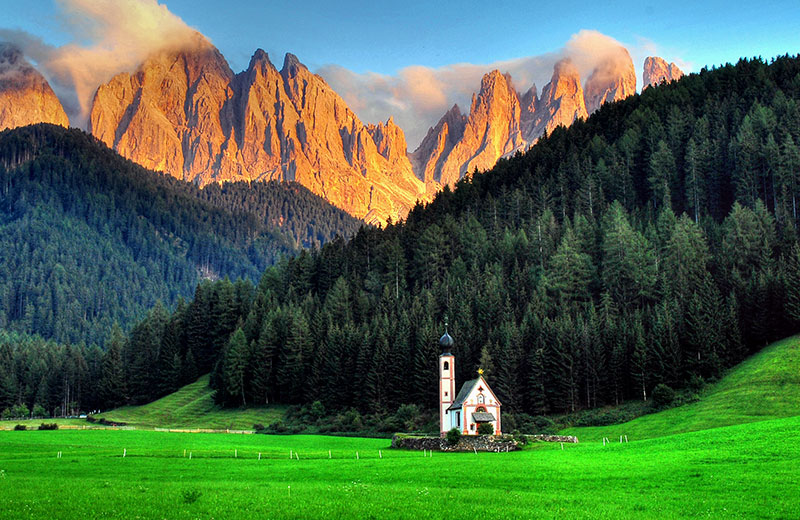
Santa Maddalena (Alto Adige)

Roma (Lazio)
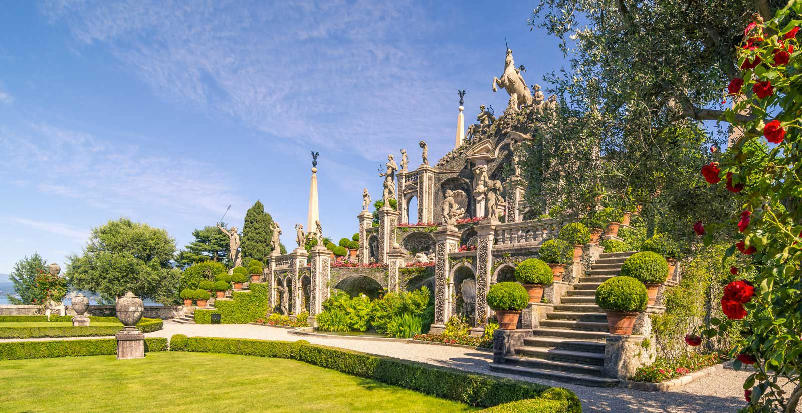
Lago Maggiore (Piemonte)
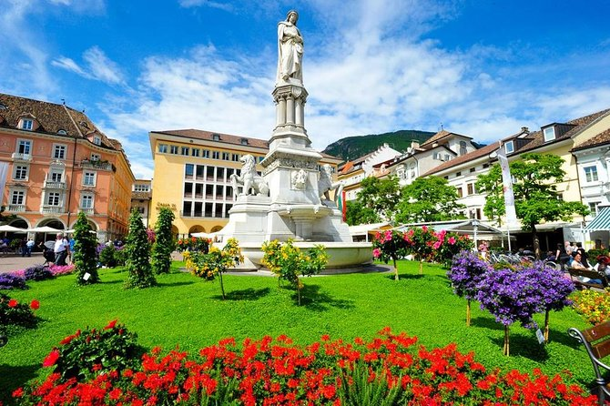